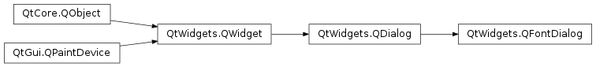
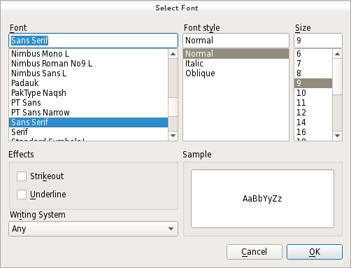

QFontDialog¶
Synopsis¶
Functions¶
- def
currentFont() - def
open(receiver, member) - def
options() - def
selectedFont() - def
setCurrentFont(font) - def
setOption(option[, on=true]) - def
setOptions(options) - def
testOption(option)
Signals¶
- def
currentFontChanged(font) - def
fontSelected(font)
Detailed Description¶
The
PySide2.QtWidgets.QFontDialogclass provides a dialog widget for selecting a font.A font dialog is created through one of the static
PySide2.QtWidgets.QFontDialog.getFont()functions.Examples:
(ok, font) = QFontDialog.getFont(QFont("Helvetica [Cronyx]", 10), self) if ok: # the user clicked OK and font is set to the font the user selected else: # the user canceled the dialog; font is set to the initial # value, in this case Helvetica [Cronyx], 10The dialog can also be used to set a widget’s font directly:
myWidget.setFont(QFontDialog.getFont(0, myWidget.font()))If the user clicks OK the font they chose will be used for myWidget, and if they click Cancel the original font is used.
See also
PySide2.QtGui.QFontPySide2.QtGui.QFontInfoPySide2.QtGui.QFontMetricsPySide2.QtWidgets.QColorDialogPySide2.QtWidgets.QFileDialogStandard Dialogs Example
-
class
PySide2.QtWidgets.QFontDialog([parent=nullptr])¶ -
class
PySide2.QtWidgets.QFontDialog(initial[, parent=nullptr]) Parameters: - initial –
PySide2.QtGui.QFont - parent –
PySide2.QtWidgets.QWidget
Constructs a standard font dialog.
Use
PySide2.QtWidgets.QFontDialog.setCurrentFont()to set the initial font attributes.The
parentparameter is passed to thePySide2.QtWidgets.QDialogconstructor.Constructs a standard font dialog with the given
parentand specifiedinitialcolor.- initial –
-
PySide2.QtWidgets.QFontDialog.FontDialogOption¶ This enum specifies various options that affect the look and feel of a font dialog.
For instance, it allows to specify which type of font should be displayed. If none are specified all fonts available will be listed.
Note that the font filtering options might not be supported on some platforms (e.g. Mac). They are always supported by the non native dialog (used on Windows or Linux).
Constant Description QFontDialog.NoButtons Don’t display OK and Cancel buttons. (Useful for “live dialogs”.) QFontDialog.DontUseNativeDialog Use Qt’s standard font dialog on the Mac instead of Apple’s native font panel. QFontDialog.ScalableFonts Show scalable fonts QFontDialog.NonScalableFonts Show non scalable fonts QFontDialog.MonospacedFonts Show monospaced fonts QFontDialog.ProportionalFonts Show proportional fonts
-
PySide2.QtWidgets.QFontDialog.currentFont()¶ Return type: PySide2.QtGui.QFontReturns the current font.
-
PySide2.QtWidgets.QFontDialog.currentFontChanged(font)¶ Parameters: font – PySide2.QtGui.QFont
-
PySide2.QtWidgets.QFontDialog.fontSelected(font)¶ Parameters: font – PySide2.QtGui.QFont
-
static
PySide2.QtWidgets.QFontDialog.getFont(initial[, parent=nullptr[, title=""[, options=QFontDialog.FontDialogOptions()]]])¶ Parameters: - initial –
PySide2.QtGui.QFont - parent –
PySide2.QtWidgets.QWidget - title – unicode
- options –
PySide2.QtWidgets.QFontDialog.FontDialogOptions
Return type: PyTuple
Executes a modal font dialog and returns a font.
If the user clicks OK, the selected font is returned. If the user clicks Cancel, the
initialfont is returned.The dialog is constructed with the given
parentand the options specified inoptions.titleis shown as the window title of the dialog andinitialis the initially selected font. If theokparameter is not-null, the value it refers to is set to true if the user clicks OK, and set to false if the user clicks Cancel.Examples:
(ok, font) = QFontDialog.getFont(QFont("Times", 12), self) if ok: # font is set to the font the user selected else: # the user canceled the dialog; font is set to the initial # value, in this case Times, 12.
The dialog can also be used to set a widget’s font directly:
myWidget.setFont(QFontDialog.getFont(0, myWidget.font()))
In this example, if the user clicks OK the font they chose will be used, and if they click Cancel the original font is used.
Warning
Do not delete
parentduring the execution of the dialog. If you want to do this, you should create the dialog yourself using one of thePySide2.QtWidgets.QFontDialogconstructors.- initial –
-
static
PySide2.QtWidgets.QFontDialog.getFont([parent=nullptr]) Parameters: parent – PySide2.QtWidgets.QWidgetReturn type: PyTuple This is an overloaded function.
Executes a modal font dialog and returns a font.
If the user clicks OK, the selected font is returned. If the user clicks Cancel, the Qt default font is returned.
The dialog is constructed with the given
parent. If theokparameter is not-null, the value it refers to is set to true if the user clicks OK, and false if the user clicks Cancel.Example:
(ok, font) = QFontDialog.getFont(self) if ok: # font is set to the font the user selected else: # the user canceled the dialog; font is set to the default # application font, QApplication.font()
Warning
Do not delete
parentduring the execution of the dialog. If you want to do this, you should create the dialog yourself using one of thePySide2.QtWidgets.QFontDialogconstructors.
-
PySide2.QtWidgets.QFontDialog.open(receiver, member)¶ Parameters: - receiver –
PySide2.QtCore.QObject - member – str
This is an overloaded function.
Opens the dialog and connects its
PySide2.QtWidgets.QFontDialog.fontSelected()signal to the slot specified byreceiverandmember.The signal will be disconnected from the slot when the dialog is closed.
- receiver –
-
PySide2.QtWidgets.QFontDialog.options()¶ Return type: PySide2.QtWidgets.QFontDialog.FontDialogOptions
-
PySide2.QtWidgets.QFontDialog.selectedFont()¶ Return type: PySide2.QtGui.QFontReturns the font that the user selected by clicking the OK or equivalent button.
Note
This font is not always the same as the font held by the
PySide2.QtWidgets.QFontDialog.currentFont()property since the user can choose different fonts before finally selecting the one to use.
-
PySide2.QtWidgets.QFontDialog.setCurrentFont(font)¶ Parameters: font – PySide2.QtGui.QFontSets the font highlighted in the
PySide2.QtWidgets.QFontDialogto the givenfont.
-
PySide2.QtWidgets.QFontDialog.setOption(option[, on=true])¶ Parameters: - option –
PySide2.QtWidgets.QFontDialog.FontDialogOption - on –
PySide2.QtCore.bool
Sets the given
optionto be enabled ifonis true; otherwise, clears the givenoption.- option –
-
PySide2.QtWidgets.QFontDialog.setOptions(options)¶ Parameters: options – PySide2.QtWidgets.QFontDialog.FontDialogOptions
-
PySide2.QtWidgets.QFontDialog.testOption(option)¶ Parameters: option – PySide2.QtWidgets.QFontDialog.FontDialogOptionReturn type: PySide2.QtCore.boolReturns
trueif the givenoptionis enabled; otherwise, returns false.
© 2018 The Qt Company Ltd. Documentation contributions included herein are the copyrights of their respective owners. The documentation provided herein is licensed under the terms of the GNU Free Documentation License version 1.3 as published by the Free Software Foundation. Qt and respective logos are trademarks of The Qt Company Ltd. in Finland and/or other countries worldwide. All other trademarks are property of their respective owners.